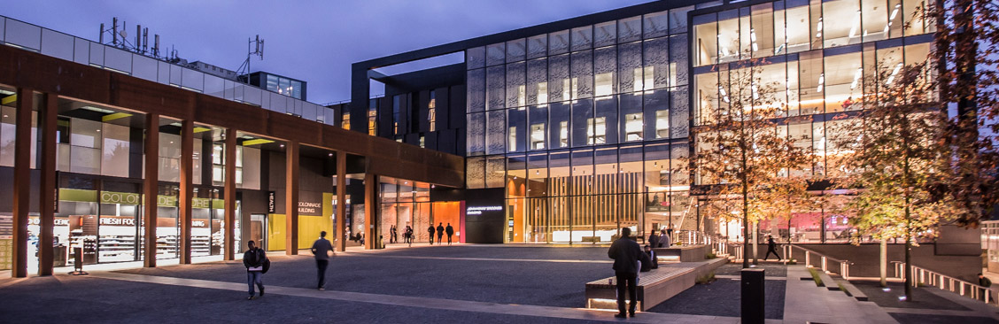

Welcome to The School of The Built EnvironmentThe School of the Built Environment at Oxford Brookes University produces high calibre graduates with the deep and broad range of skills necessary to succeed at the highest levels in the real estate, planning, urban design, and construction industry sectors. We offer highly innovative programmes of study with outstanding teaching, world-class research and strong industry links for long-lasting and rewarding careers. To learn more about our research, please use the links below |